Les arbres

Arbre créé par un algorithme récursif
Introduction
Problématique
La notion de liste chaînée explorée dans un précédent chapitre est parfaite pour structurer un ensemble d'éléments destiné à être énuméré séquentiellement.
Comme on l'a vu avec la réalisation de piles et de files, cette structure permet également un accès simple, suivant le cas, au premier élément ou au dernier de la séquence.
Par contre l’accès à un élément situé à une position quelconque est plus problématique, puisqu'on doit parcourir les éléments les uns après les autres, apportant ainsi un temps d’accès proportionnel au nombre d’éléments parcourus soit une complexité moyenne en \(\mathcal{O}(\small{n}\)\()\).
Structures arborescentes
Les structures arborescentes forment une autre famille de structures chaînées, dans lesquelles le nombre de sauts à effectuer pour aller depuis le point de départ jusqu'à une position souhaitée est potentiellement bien moindre.
Ces structures sont omniprésentes en informatique et nous en avons déjà observé une en classe de Première : l'arborescence des fichiers d'un ordinateurs.

Pour accéder à un fichier par exemple, on parcourt des répertoires (en partant du répertoire racine), ce qui permet ensuite un accès rapide au fichier recherché. On imagine sans mal que si l'on devait parcourir une liste de fichiers jusqu’à obtenir le bon, le temps nécessaire à cet accès serait beaucoup plus grand, proportionnellement au nombre de fichiers de cette liste.
Ce principe d'un point de départ unique à partir duquel une structure chaînée se scinde à chaque étape en plusieurs branches donne l'idée générale de la structure d'arbre en informatique, qui est la base d'innombrables structures de données.
Cette structure permet en outre une organisation hiérarchique de l'information, qui la rend utile pour représenter des programmes, des formules de logique, le contenu de pages web, etc.
Arbres quelconques
Définition et exemples
Définition
Un arbre est une structure hiérarchique permettant de représenter de manière symbolique des informations structurées.
Exemple 2 : un arbre syntaxique
Un arbre syntaxique représente l’analyse d’une phrase à partir de règles de grammaire. 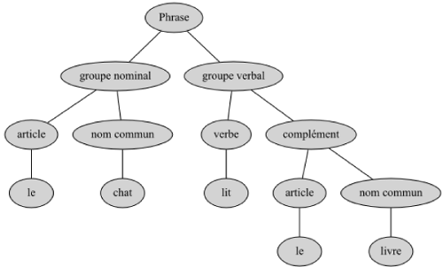
Exemple 3 : un arbre lexicographique
Un arbre lexicographique, ou arbre en parties communes, ou dictionnaire, représente un ensemble de mots. Les préfixes communs à plusieurs mots apparaissent une seule fois dans l’arbre. 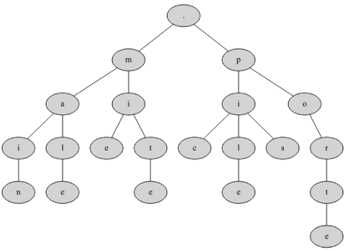
Exercice 1
Rajouter dans cet arbre les mots : malle et portail.
Exemple 4 : représentation d'une expression arithmétique
On peut également représenter les expressions arithmétiques par des arbres étiquetés par des opérateurs, des constantes et des variables.
La structure de l’arbre rend compte de la priorité des opérateurs et rend inutile tout parenthésage.
Pour l’expression : \((\displaystyle\frac{y}{2}-t)(75+z)\) cela donne : 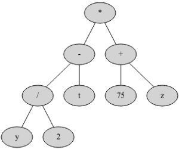
Exercice 2
Représenter l’expression : \(3+(\displaystyle\frac{7}{3}-1)^3\)
Correction de l'exercice
Terminologie
Noeud
Un arbre est constitué de noeuds, reliés entre eux par des arêtes selon une relation pères-fils. 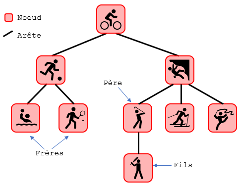 On distingue trois types de noeuds :
- La racine de l’arbre est l’unique noeud ne possédant pas de parent.
- Les feuilles (ou noeuds externes), éléments ne possédant pas de fils dans l’arbre.
- Les noeuds internes, éléments possédant des fils (sous-branches).
Le chemin à la racine d’un noeud est la liste des noeuds qu’il faut parcourir depuis la racine jusqu’au noeud considéré. 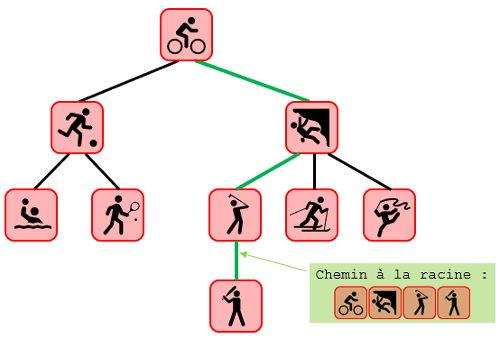
Remarque
L'analogie avec les arbres réels peut s'avérer trompeuse. Les arbres - en informatique - sont le plus souvent représentés avec la racine en haut, puis les noeuds, et les feuilles en bas.
Mesures
La profondeur d’un noeud est la distance (nombre d’arêtes) de la racine au noeud.
La hauteur d’un arbre est la plus grande profondeur d’une feuille de l’arbre.
La taille d’un arbre est son nombre de noeuds.
La longueur de cheminement est la somme des profondeurs de chacune des feuilles. 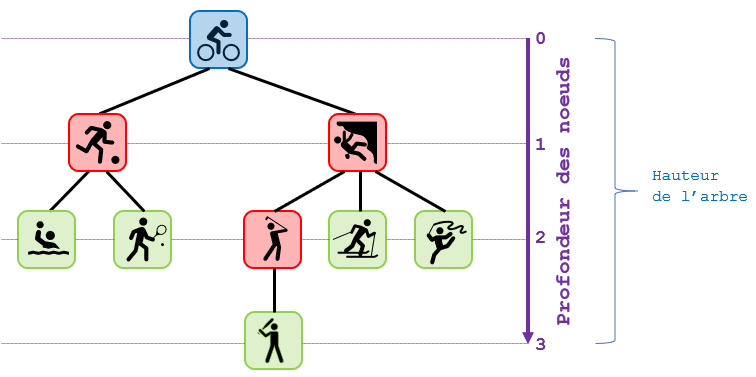 Cette structure de donnée est récursive : chaque noeud est lui même noeud-racine d’un sous-arbre (également appelé branche).
Remarque importante
Il n’existe pas de définition universelle pour la hauteur d’un arbre et la profondeur d’un noeud dans un arbre.
Dans certains cas la profondeur des noeuds est comptée à partir de 1 et/ou la hauteur est égale au nombre de profondeurs différentes…
Parfois également, la taille d’un arbre ne tient pas compte des feuilles !!
Exercice 3
Soit l’arbre suivant :
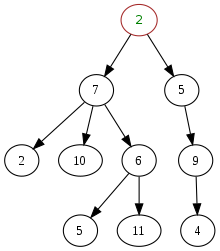
- Quelle est la racine de cet arbre ?
- Donner la hauteur et la taille de cet arbre.
- Donner le(s) fils du noeud 7.
- Donner le père du noeud 11.
- Donner toutes les feuilles de cet arbre.
Étiquette
La finalité d’un arbre est le plus souvent de structurer des données : chaque noeud peut être identifié par une étiquette.
L’étiquette représente directement la valeur du noeud ou bien une clé associée à une donnée.
Un arbre dont tous les noeuds sont nommés est dit étiqueté.
Exemple
L’arbre ci-dessous est étiqueté avec les entiers de 1 à 10 : 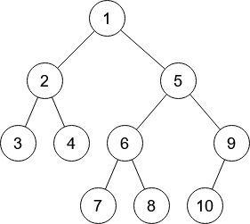
Arbres binaires
Définition et exemples
Définition
Un arbre binaire est un arbre dont tous les noeuds ont au plus deux fils.
Exemple et contre-exemple
L'arbre suivant est binaire : 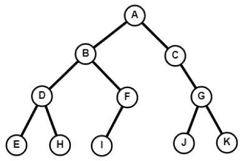
En revanche, l'arbre qui a servi d'exemple tout au long du paragraphe précédent n'en est pas un... 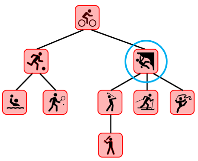 ... puisqu'il contient un noeud ayant plus de deux fils.
Les définitions vues précédemment pour des arbres quelconques restent bien évidemment valables pour les arbres binaires. Mais dans ce cas, chaque noeud possède deux sous-arbres, éventuellement vides, que l'on appelle sous-arbre gauche et sous-arbre droit.
Par exemple, dans le cas de l'arbre binaire précédent, le noeud A possède un sous-arbre gauche et un sous-arbre droit comme le montre la figure suivante : 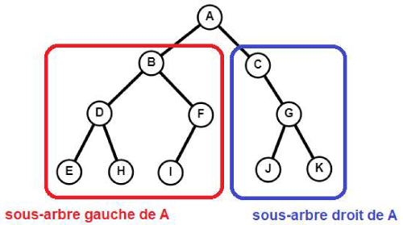
Ainsi, et plus précisément, un arbre binaire est un ensemble fini de noeuds correspondant à l'un des deux cas suivants :
- Soit l'arbre est vide, c'est-à-dire qu'il ne contient aucun noeud.
- Soit l'arbre n'est pas vide, et ses noeuds sont structurés de la façon suivante :
- Un noeud est la racine de l'arbre.
- Les noeuds restant sont séparés en deux sous-ensembles, qui forment récursivement deux sous-arbres (le gauche et le droit).
- La racine est reliée à ses deux sous-arbres gauche et droit, et plus précisément à la racine de chacun de ses sous-arbres (lorsqu'ils ne sont pas vides).
On peut rapprocher la notion de noeud d’un arbre binaire à celle d’une cellule de liste chaînée, la racine d’un arbre non vide correspond à la tête d’une liste non vide qui contient une valeur et deux chainages menant vers les deux directions.
Cas particuliers d'arbres binaires
Il est possible d’avoir des arbres binaires de même taille mais de "formes" très différentes :
Arbre complet
Un arbre complet (ou parfait) est un arbre binaire dont tous les noeuds possèdent exactement 2 fils (sauf les feuilles qui en ont zéro !). 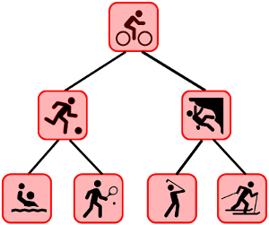
Arbre filiforme
Un arbre filiforme est un arbre binaire dont tous les noeuds (sauf la feuille) possèdent un unique fils (on parle aussi de peigne). 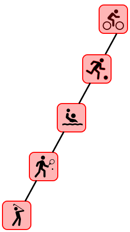
On pourra aussi dire que l’arbre filiforme est déséquilibré alors que l’arbre complet est équilibré.
Propriétés
Encadrement de la hauteur
La hauteur d’un arbre filiforme de taille \(~n~\) est égale à \(~n-1\).
La hauteur d’un arbre complet de taille \(~n~\) est égale à \(⌊\operatorname{log_{2}}(n)⌋\) où \(⌊~⌋\) est le symbole de la partie entière.
Exemple
Si on reprend l'arbre complet précédent, \(\operatorname{log_{2}}(7)\approx2,8\) : la hauteur de l’arbre complet est égale à \(~2\), ce que l'on vérifie aisément.
Un arbre filiforme et un arbre complet étant deux cas extrêmes, on peut encadrer la hauteur d’un arbre binaire quelconque :
Propriété
Un encadrement de la hauteur \(~h~\) d’un arbre binaire quelconque de taille \(~n~\) est : \(⌊\operatorname{log_{2}}(n)⌋~\)\(\leq\)\(~h~\)\(\leq\)\(~n-1\).
De la même manière, on peut encadrer la taille d’un arbre binaire quelconque connaissant sa hauteur :
Propriété
Un encadrement de la taille \(~n~\) d’un arbre binaire quelconque de hauteur \(~h~\) est : \(h+1~\)\(\leq\)\(~n~\)\(\leq\)\(~2^{h+1}−1\).
Exemple
La taille d’un arbre de hauteur \(~3~\) est comprise entre \(~3+1=4~\) et \(~2^{3+1}−1=15\). 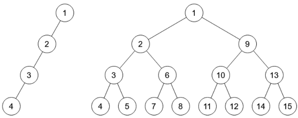
Implémentation en Python
Type abstrait arbre binaire
De manière générale, on peut construire un arbre binaire comme un noeud composé de deux sous-arbres. L'arbre vide est représentée par la valeur None. Ainsi, une feuille est un noeud avec les sous-arbres gauche et droit à None. Pour annoter la structure de l'arbre avec des informations, on utilise des étiquettes pouvant être enregistrées à chaque noeud.
On peut ensuite parcourir un arbre par l'accès à son étiquette et à ses sous-arbres gauche et droit.
Voici les fonctions primitives qui définissent le type abstrait arbre binaire :
| Action | Instruction |
|---|---|
| Créer un arbre vide | arbreVide() |
Tester si l'arbre A est vide |
estVide(A) |
Renvoyer la clé (la valeur) de la racine de l'arbre A |
cle(A) |
Renvoyer le sous-arbre gauche de l'arbre A (si A est non vide) |
sousArbreGauche(A) |
Renvoyer le sous-arbre droit de l'arbre A (si A est non vide) |
sousArbreDroit(A) |
Créer un arbre binaire de clé valeur et de sous-arbres G et D |
arbreCons(valeur, G, D) |
Exemple
A = arbreVide()⇒A = ()estVide(A)⇒True- Pour définir à l'aide de primitives l'arbre suivant :
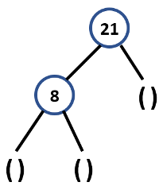
On écrira :
A = arbreCons(21, arbreCons(8, arbreVide(), arbreVide()), arbreVide()) cle(A)⇒21estVide(A)⇒FalsearbreGauche(A)⇒arbreCons(8, arbreVide(), arbreVide())arbreDroit(A)⇒arbreVide()
Exercice 4
- Comment s'écrit à l'aide de fonctions primitives l'arbre suivant, noté
B? 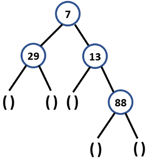 - A l'aide de fonctions primitives et des arbres
AetBcréés précédemment, définir l'arbreCsuivant : 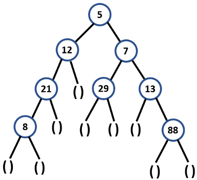 - Quel arbre est renvoyé par l'instruction :
sousArbreGauche(sousArbreDroit(C))? - Que renvoie l'instruction :
estVide(sousArbreDroit(sousArbreGauche(sousArbreGauche(C))))? - Même question avec l'instruction :
cle(sousArbreDroit(sousArbreDroit(C))).
Implémentation
Suivant l’usage, un arbre binaire peut être représenté par :
- Un chaînage (similaire à une liste chaînée, mais chaque noeud a deux fils)
- Un tableau qui stocke les noeuds, la racine à la première position, les autres noeuds ont la position qu’on veut.
- Un tableau où les noeuds ont une position définie à l’avance. La racine est à la position \(~1\). Le noeud à la position \(~p~\) est le père des noeuds des positions \(~2p~\) et \(~2p+1~\).
Python ne propose pas nativement de structure de données permettant d'implémenter directement les arbres binaires. Il va donc être nécessaire de créer manuellement cette structure et pour cela, nous allons utiliser un chaînage.
Pour programmer ce type de structure, nous allons utiliser le paradigme de la programmation orientée objet (P.O.O.).
Un arbre vide est représenté par l’attribut valeur à None.
Les attributs G et D sont des arbres donc tous les noeuds sont des arbres, une feuille a deux attributs G et D à None.
class Arbre :
def __init__(self, valeur=None, G=None, D=None):
self.valeur = valeur
self.G = G
self.D = D
# ...
a1 = Arbre() # arbre vide
a2 = Arbre(88) # arbre avec un noeud (la racine)
Ainsi, si l'on souhaite créer en Python l'arbre C de l'exercice 4, on peut procéder ainsi :
A = Arbre(21, Arbre(8))
B = Arbre(7, Arbre(29), Arbre(13, None, Arbre(88)))
C = Arbre(5, Arbre(12, A), B)
On donne la méthode d'affichage ci-dessous afin de représenter au mieux un arbre dans une console Python :
def affichage(self, niveau=0, c=132):
if self.D:
self.D.affichage(niveau+1, 47)
if self.valeur :
print(f"{' ' * 4 * niveau}{chr(c)}{self.valeur}")
if self.G:
self.G.affichage(niveau+1, 92)
Ainsi, l'utilisation de cette méthode sur l'arbre C donne :
>>> C.affichage()
/88
/13
/7
\29
•5
\12
\21
\8
Exercice 5 : implémentation de primitives
Coder en Python les méthodes suivantes de la classe Arbre :
estVide()qui renvoieTruesi l'arbre est vide,Falsesinon.cle()qui renvoie la clé de la racine de l'arbre.sousArbreGauche()qui renvoie le sous-arbre gauche de la racine de l'arbre (siAest non vide).sousArbreDroit()qui renvoie le sous-arbre droit de la racine de l'arbre (siAest non vide).estFeuille()qui renvoieTruesi l'arbre est une feuille,Falsesinon.
Algorithmique des arbres binaires
La définition d'un arbre binaire étant récursive, il est naturel d'écrire des opérations sur les arbres binaires sous la forme de fonctions récursives.
L'exemple le plus simple est celui d'une fonction taille() qui calcule la taille d'un arbre.
On commence par considérer le cas de base où l'arbre est vide. Dans ce cas, il convient de renvoyer 0 car il n'y a aucun noeud dans l'arbre.
Dans le cas contraire, l'arbre contient au moins un noeud (la racine de l'arbre), auquel on va ajouter la taille des sous-arbres gauche et droit, calculée récursivement :
def taille(self):
if self.estVide():
return 0
gauche, droit = self.sousArbreGauche(), self.sousArbreDroit()
return 1 + gauche.taille() + droit.taille()
Exercice 6 : hauteur d'un arbre
Pour calculer la hauteur d’un arbre, il faut parcourir toutes ses branches et retenir la profondeur de la feuille la plus éloignée.
La fonction est bien entendue récursive…
Coder en Python la méthode hauteur() de la classe Arbre qui calcule la hauteur d'un arbre.
Correction de l'exercice
Exercice 7 : nombre de feuilles d'un arbre
Pour calculer le nombre de feuilles d’un arbre, il faut là encore parcourir toutes ses branches et compter les noeuds.
La fonction est également récursive.
Coder en Python la méthode nbFeuilles() de la classe Arbre qui calcule le nombre de feuilles d'un arbre.
Correction de l'exercice
Parcours d'un arbre binaire
Les deux fonctions taille() et hauteur() parcourent tous les noeuds de l'arbre. L'ordre dans lequel ce parcours est effectué n'est pas important. Dans les deux cas, peu importe si on commence le calcul par le sous-arbre gauche ou le droit.
Ecrivons maintenant une autre fonction qui affiche les valeurs contenues dans tous les noeuds de l'arbre. L'ordre dans lequel le parcours des noeuds est effectué devient important. On peut par exemple parcourir le sous-arbre gauche, puis afficher la valeur de la racine, puis enfin parcourir le sous-arbre droit.
Définition
Un parcours d’arbre est une façon d’ordonner les noeuds d’un arbre afin de les parcourir.
Il existe différents types de parcours :
- Parcours en profondeur :
- Infixe (en ordre)
- Préfixe (en préordre)
- Postfixe (en postordre)
- Parcours en largeur
Parcours en profondeur
Les trois méthodes de parcours en profondeur se distinguent uniquement par l’ordre dans lequel on réalise les parcours des branches droite et gauche par rapport à la visite d’un noeud.
Pour illustrer chaque méthode, reprenons l'arbre d'un précédent exemple :

Ensuite, entourons-le de la façon suivante :
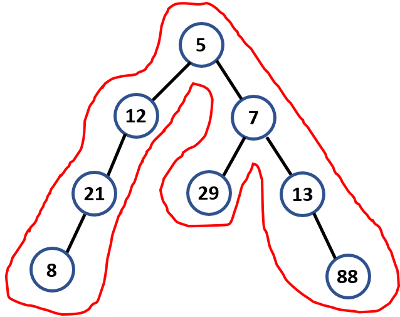
Parcours infixe
Dans un parcours infixe (inorder traversal), chaque noeud est visité après son enfant gauche mais avant son enfant droit.
Le parcours infixe affiche la racine après avoir traité le sous-arbre gauche. Et après traitement de la racine, on traite le sous-arbre droit (c'est donc un parcours de type "GRD" : Gauche, Racine, Droite).
Ainsi, l’affichage des noeuds avec un parcours infixe de l’arbre précédent est : 8, 21, 12, 5, 29, 7, 13, 88.
Procédé mnémotechnique
Une façon relativement simple de retenir l'ordre infixe est de suivre la ligne qui entoure l'arbre, dans le sens anti-horaire, et en partant de la racine.
A chaque fois que l'on rencontre un noeud et qu'il est possible de "toucher" le bas de ce noeud, on note son étiquette.
Dans l'exemple précédent, on part de la racine, mais il n'est pas possible de "toucher" la partie inférieure de celle-ci (à cause de l'arête entre la racine et le noeud étiqueté 12).
De même pour les deux noeuds suivants : ceux étiquetés 12 puis 21.
Ainsi, le premier noeud dont il est possible "d'atteindre" le bas est celui dont l'étiquette est 8 et ainsi de suite.
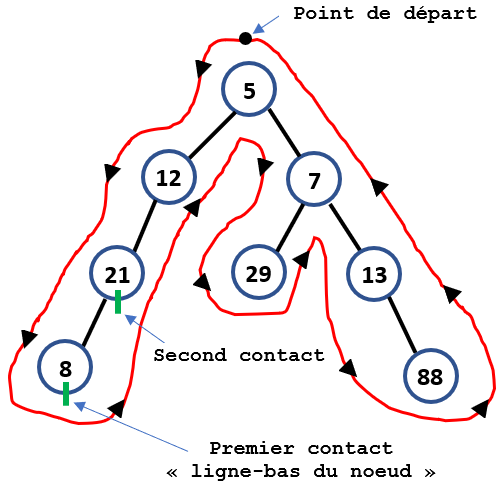
Code Python
On donne ci-dessous le code de la méthode parcoursInfixe() qui affiche les étiquettes des noeuds d'un arbre dans un parcours infixe.
def parcoursInfixe(self):
if not self.valeur:
return
gauche, droit = self.sousArbreGauche(), self.sousArbreDroit()
gauche.parcoursInfixe()
print(self.valeur, end = " ")
droit.parcoursInfixe()
Exercice 8
Coder en Python la méthode listeParcoursInfixe() qui renvoie une liste composée des étiquettes des noeuds d'un arbre dans un parcours infixe.
\(~\)
Correction de l'exercice
Parcours préfixe
Dans un parcours préfixe (preorder traversal), chaque noeud est visité avant que ses enfants soient visités.
Cela signifie que l'on affiche la racine de l'arbre, on parcourt tout le sous-arbre de gauche, une fois qu'il n'y a plus de sous-arbre gauche on parcourt les éléments du sous-arbre droit.
Ce type de parcours peut être résumé en trois lettres : "RGD" (pour Racine, Gauche, Droit).
Ainsi, l’affichage des noeuds avec un parcours préfixe de l’arbre précédent est : 5, 12, 21, 8, 7, 29, 13, 88.
Procédé mnémotechnique
Une façon relativement simple de retenir l'ordre préfixe est de suivre la ligne qui entoure l'arbre, dans le sens anti-horaire, et en partant de la racine.
A chaque fois que l'on rencontre un noeud et qu'il est possible de "toucher" la partie gauche de ce noeud, on note son étiquette.
Dans l'exemple précédent, on part de la racine et on voit qu'il est possible de "toucher" la partie gauche de celle-ci donc on note son étiquette.
De la même façon, la partie gauche du noeud suivant, dont l'étiquette est 12 est atteignable et ainsi de suite.
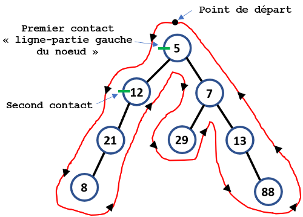
Exercice 9
Coder en Python la méthode parcoursPrefixe() qui affiche les étiquettes des noeuds d'un arbre dans un parcours préfixe.
Correction de l'exercice
Parcours suffixe (ou postfixe)
Dans un parcours suffixe (ou postfixe pour postorder traversal), chaque noeud est visité après que ses enfants soient visités.
Le parcours postfixe effectue schématiquement le parcours suivant : sous-arbre gauche, sous-arbre droit puis la racine, c'est donc un parcours "GDR" (Gauche, Droite, Racine).
Ainsi, l’affichage des noeuds avec un parcours postfixe de l’arbre précédent est : 8, 21, 12, 29, 88, 13, 7, 5.
Procédé mnémotechnique
Une façon relativement simple de retenir l'ordre postfixe est de suivre la ligne qui entoure l'arbre, dans le sens anti-horaire, et en partant de la racine.
A chaque fois que l'on rencontre un noeud et qu'il est possible de "toucher" la partie droite de ce noeud, on note son étiquette.
Dans l'exemple précédent, on part de la racine, mais il n'est pas possible de "toucher" la partie droite de celle-ci (à cause de l'arête entre la racine et le noeud étiqueté 12).
De même pour les deux noeuds suivants : ceux étiquetés 12 puis 21.
Ainsi, le premier noeud dont il est possible "d'atteindre" la partie droite est celui dont l'étiquette est 8 et ainsi de suite.
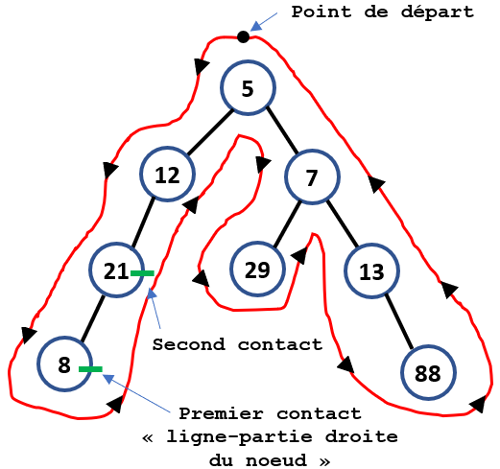
Exercice 10
Coder en Python la méthode parcoursPostfixe() qui affiche les étiquettes des noeuds d'un arbre dans un parcours postfixe.
Correction de l'exercice
Parcours en largeur
Parcours en largeur
Dans un parcours en largeur (ou BFS, pour Breadth First Search), on commence par explorer la racine de l'arbre, puis son fils gauche (s'il existe) suivi de son fils droit (s'il existe), puis le fils gauche du fils gauche etc.
Ainsi, l’affichage des noeuds avec un parcours en largeur de l’arbre précédent est : 5, 12, 7, 21, 29, 13, 8, 88.
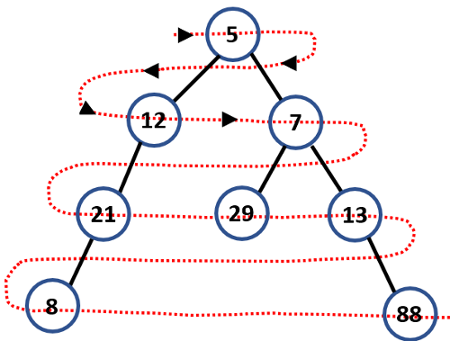
Pour implémenter ce parcours, le plus simple est d'utiliser une file afin d'y stocker les différents éléments visités.
Le principe de l’algorithme de parcours en largeur est le suivant :
- Mettre l'arbre source dans la file.
- Retirer l'arbre du début de la file pour le traiter (récupérer sa racine).
- Mettre les sous-arbres dans la file (s'ils existent !).
- Si la file n'est pas vide reprendre à l'étape 2.
Exercice 11
Coder en Python la méthode parcoursLargeur() qui affiche les étiquettes des noeuds d'un arbre dans un parcours en largeur en utilisant une file.
Correction de l'exercice
Arbres binaires de recherche
Problème introductif
Exercice 12
La ville Binarus a été construite selon la manière suivante :
- Chaque rue mène à une seule maison identifiée par trois lettres de l’alphabet.
- Il y a autant de maisons que de combinaisons possibles de triplets de trois lettres.
- Devant chaque maison se trouve deux nouvelles rues, si on emprunte la rue de gauche, toutes les maisons que l’on rencontrera porteront un nom de trois lettres inférieur dans l’ordre lexicographique à la maison du départ de l’embranchement. Par contre la rue de droite mène vers des maisons dont le nom est supérieur dans l’ordre lexicographique.
- Proposer une suite possible avec 7 premières maisons.
- Combien de maisons possède la ville Binarus ?
- Déterminer le nombre maximal de rues à traverser pour trouver une maison quelconque dans le cas où l'arbre est complet.
Définition et exemples
Définition
Un arbre binaire de recherche (ABR) est un arbre binaire qui est étiqueté par des valeurs totalement ordonnables (c'est-à-dire qu'il doit exister une manière de dire si un élément est plus grand ou plus petit qu'un autre) grâce à deux règles de construction.
L’étiquette d’un noeud est :
- supérieure ou égale à celle de chaque noeud de son sous-arbre gauche ;
- inférieure ou égale à celle de chaque noeud de son sous-arbre droit.
Exemple et contre-exemple
L'arbre suivant est un arbre binaire de recherche : 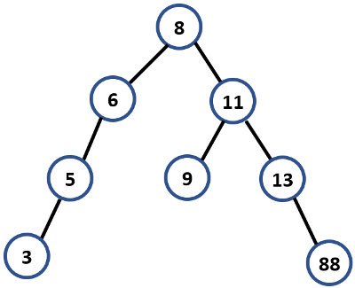
En revanche, l'arbre suivant n'en est pas un...
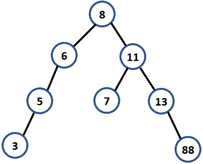
... puisque le noeud étiqueté 7 ne peut pas se trouver dans le sous-arbre droit du noeud étiqueté 8.
Exercice 13
Un vétérinaire voudrait stocker les fiches médicales de ses patients, et, plutôt que d'utiliser un tableau ou une liste, on se propose d'utiliser un arbre binaire de recherche.
La fiche contiendra différentes informations sur l'animal ; on utilisera son nom comme clé (c'est-à-dire comme critère pour la relation d'ordre), que l'on triera selon l'ordre alphabétique croissant.
Le vétérinaire reçoit sa première patiente, qui répond au nom de Gaufrette. Comme sa fiche sera le premier noeud de notre arbre, elle en devient automatiquement la racine.
Puis le vétérinaire reçoit les animaux dans l’ordre suivant afin de les soigner : Charlie, Médor, Flipper, Bubulle et Augustin.
- Construire l’arbre binaire de recherche associé à cette séquence.
- Imaginons que la séquence soit maintenant la suivante : {Gaufrette, Charlie, Médor, Flipper, Augustin, Bubulle}, c’est-à-dire que Augustin soit arrivé au rendez-vous médical avant Bubulle.
L’arbre binaire de recherche est-il encore le même ?
Quelle conclusion peut-on en tirer ?
Remarque
Les algorithmes vus sur les arbres binaires (taille et hauteur, de même que les parcours infixe, préfixe, postfixe et en largeur) fonctionnent bien entendu sur les ABR (qui n'en sont qu'un cas particulier).
Exercice 14
Afficher, à la main, le parcours infixe de l'ABR suivant :
Quelle propriété semble se dégager ?
Exercice 15
Coder en Python la méthode estABR() qui renvoie True si l'arbre est un arbre binaire de recherche et False sinon. On veillera à utiliser la méthode listeParcoursInfixe().
Recherche d’une clé dans un arbre binaire de recherche
Comme l’a montré le problème introductif, la recherche d’éléments dans un ABR est particulièrement efficace.
L’idée est donc de comparer l’élément recherché aux valeurs de noeuds successifs :
- Si l’élément cherché est plus grand, on continue la recherche dans le sous-arbre droit et s'il est plus petit, dans le sous-arbre gauche.
- Si on le trouve on renvoie
True, par contre si on termine dans le sous-arbre vide d’une feuille on renvoieFalse.
Remarque
Plus l’ABR est "équilibré" , c’est-à-dire qu'il a un nombre de noeuds équitablement répartis entre les sous-arbres droit et gauche, plus la recherche est efficace.
En effet, notre algorithme de recherche élimine la moitié des éléments à chaque étape. Cela fait écho à la recherche dichotomique dans un tableau trié, où chaque étape divise par 2 le nombre d'éléments à examiner.
On sait que cet algorithme est extrêmement efficace (complexité dans le pire des cas en \(\mathcal{O}(\operatorname{log_{2}}(n))\)), ainsi, il ne faut pas plus de 20 étapes pour chercher parmi un million de valeurs.
Aussi, on essaiera d’éviter la structure de "peigne", où l’on rangerait tous les éléments dans l’ordre croissant ou décroissant puique la recherche serait au contraire peu efficace (elle serait susceptible de parcourir l'arbre tout entier, dans le cas d'un recherche infructueuse).
Exercice 16
Coder en Python la méthode rechercherElement(e) qui renvoie True si l'élément e est un élément d'un arbre binaire de recherche et False sinon.
On veillera à ce que l'arbre sur laquelle cette méthode s'applique est bien un ABR.
Insertion d’une clé dans un arbre binaire de recherche
Il est tout à fait possible d'insérer un noeud dans un arbre binaire de recherche.
De la même manière que nous avons cherché un élément dans un ABR, nous allons nous déplacer dans l’ABR afin d’ajouter un nouvel élément en respectant les contraintes liées à la définition de l’ABR.
Principe
Pour insérer un nouveau noeud x dans un ABR, on parcourt l'arbre de façon similaire à l'algorithme de recherche jusqu'à trouver un noeud y sans fils gauche et de clé supérieure (ou sans fils droit et de clé inférieure). À cet instant, on place x en tant que fils gauche (resp. droit) de y.
Exercice 17
Coder en Python la méthode insererElement(e) qui insère un noeud de clé e dans un arbre binaire de recherche.
Si l'étiquette existe déjà, on placera le noeud dans le sous-arbre gauche du noeud contenant cette étiquette.
On veillera à ce que l'arbre sur laquelle cette méthode s'applique est bien un ABR.
Remarques
- Les ABR construits dans ce cours peuvent contenir plusieurs fois le même élément : on dit qu'ils réalisent des multiensembles. Si on veut en revanche réaliser des ensembles, où chaque élément apparaît exactement une fois, il ne faut pas ajouter de nouvelle occurence de l'élément lorsqu'il se trouve déjà dans l'arbre. Pour cela, il y a deux solutions (voir exercice)
- La complexité de la fonction
insererElementn'est donc pas différente de celle de la fonctionrechercherElementpuisqu'on prend exactement les mêmes décisions quant à la descente dans l'arbre. Aussi, dans les deux cas, la complexité dépend de la forme de l'arbre et elle est, dans le pire des cas, majorée par sa hauteur. - Avec la méthode
insererElement, nous allons pouvoir construire des ABR par ajouts successifs d'éléments, en partantd'un arbre vide, comme le montre l'exemple suivant :🐍 Script PythonL'appeldef genABR(nbElements): L = [randint(1, 100) for i in range(nbElements)] print(L) D = Arbre() for elt in L: D.insererElement(elt) D.affichage()genABR(14)donne alors dans la console :🐍 Script Python>>> (executing file "Arbre.py") [16, 21, 20, 49, 15, 14, 39, 75, 38, 1, 29, 82, 17, 19] /82 /75 /49 \39 \38 \29 /21 \20 /19 \17 •16 \15 \14 \1